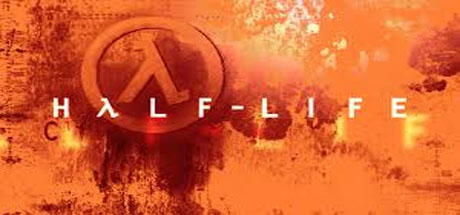
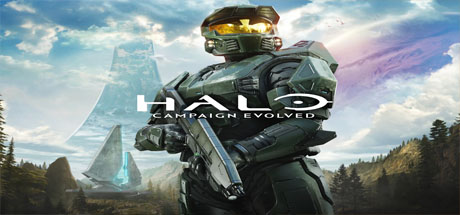
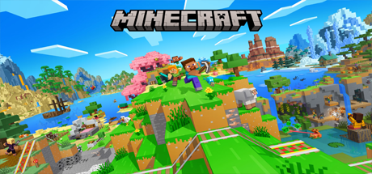
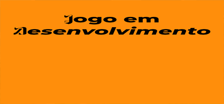

Half-Life
Um clássico da Valve que revolucionou os jogos de tiro com narrativa envolvente e ambientação científica, colocando o jogador na pele de Gordon Freeman.
Saiba mais
CS:GO
Um dos jogos competitivos mais populares do mundo, focado em estratégia, trabalho em equipe e habilidade, onde terroristas e contra-terroristas se enfrentam em partidas intensas.
Saiba mais
Halo
Uma franquia icônica de ficção científica que mistura combate futurista com uma história épica, acompanhando o supersoldado Master Chief em batalhas contra ameaças alienígenas.
Saiba mais
Minecraft
Um jogo sandbox onde a criatividade não tem limites, permitindo explorar, construir e sobreviver em mundos gerados proceduralmente com infinitas possibilidades.
Saiba mais
Stardew Valley
Um simulador relaxante de fazenda onde você planta, cria animais, faz amizades e constrói sua própria vida no campo, longe do caos da cidade.
Saiba mais
Além das Cinzas
Um jogo desenvolvido por um colega do grupo, trazendo uma proposta única e criativa com desafios, história envolvente e mecânicas diferenciadas.
Saiba mais